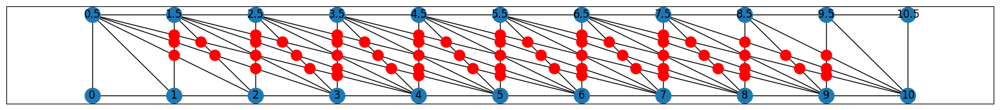

Cased drawings#
[15]:
import os
import sys
import matplotlib.pyplot as plt
import networkx as nx
sys.path.insert(0, os.path.abspath('../src/gdMetriX'))
import gdMetriX as mx
g = nx.Graph()
grids = 10
edges = 4
# Grid
for i in range(0, grids+1):
g.add_node(i, pos=(i,0))
g.add_node(i+0.5, pos=(i,1))
g.add_edge(i, i+0.5)
if i != 0:
g.add_edge(i, i-1)
g.add_edge(i+0.5, i-0.5)
# Additional edges
for i in range(0,grids+1):
for j in range(1,edges+1):
if i+j <= grids:
g.add_edge(i+0.5, i+j)
plt.figure(figsize=(grids*2, 2))
nx.draw_networkx(g, mx.get_node_positions(g))
crossing_list = mx.get_crossings_quadratic(g)
print(len(crossing_list))
x_values = [point.pos.x for point in crossing_list]
y_values = [point.pos.y for point in crossing_list]
plt.plot(x_values, y_values, 'ro', ms=12)
#plt.plot()
61
[15]:
[<matplotlib.lines.Line2D at 0x1a694bfc3a0>]

[14]:
# Crossings per edge
edge_dic = {}
for edge in g.edges():
edge_dic[edge] = []
for crossing in crossing_list:
crossing.top_edge = list(crossing.involved_edges)[0]
for edge in crossing.involved_edges:
edge_dic[edge].append(crossing)
for edge in g.edges():
print(edge, len(edge_dic[edge]))
(0, 0.5) 0
(0, 1) 0
(0.5, 1.5) 0
(0.5, 1) 0
(0.5, 2) 1
(0.5, 3) 3
(0.5, 4) 5
(0.5, 5) 9
(0.5, 6) 11
(0.5, 7) 17
(0.5, 8) 21
(0.5, 9) 27
(0.5, 10) 31
(0.5, 11) 41
(0.5, 12) 45
(0.5, 13) 57
(0.5, 14) 63
(0.5, 15) 71
(0.5, 16) 79
(0.5, 17) 95
(0.5, 18) 101
(0.5, 19) 119
(0.5, 20) 127
(0.5, 21) 139
(0.5, 22) 149
(0.5, 23) 171
(0.5, 24) 179
(0.5, 25) 199
(1, 1.5) 24
(1, 2) 0
(1.5, 2.5) 0
(1.5, 2) 23
(1.5, 3) 22
(1.5, 4) 22
(1.5, 5) 22
(1.5, 6) 24
(1.5, 7) 24
(1.5, 8) 28
(1.5, 9) 30
(1.5, 10) 34
(1.5, 11) 36
(1.5, 12) 44
(1.5, 13) 46
(1.5, 14) 57
(1.5, 15) 63
(1.5, 16) 71
(1.5, 17) 79
(1.5, 18) 95
(1.5, 19) 101
(1.5, 20) 119
(1.5, 21) 127
(1.5, 22) 139
(1.5, 23) 149
(1.5, 24) 171
(1.5, 25) 179
(2, 2.5) 35
(2, 3) 0
(2.5, 3.5) 0
(2.5, 3) 33
(2.5, 4) 32
(2.5, 5) 30
(2.5, 6) 30
(2.5, 7) 30
(2.5, 8) 30
(2.5, 9) 32
(2.5, 10) 34
(2.5, 11) 36
(2.5, 12) 38
(2.5, 13) 44
(2.5, 14) 46
(2.5, 15) 57
(2.5, 16) 63
(2.5, 17) 71
(2.5, 18) 79
(2.5, 19) 95
(2.5, 20) 101
(2.5, 21) 119
(2.5, 22) 127
(2.5, 23) 139
(2.5, 24) 149
(2.5, 25) 171
(3, 3.5) 48
(3, 4) 0
(3.5, 4.5) 0
(3.5, 4) 46
(3.5, 5) 44
(3.5, 6) 42
(3.5, 7) 39
(3.5, 8) 39
(3.5, 9) 37
(3.5, 10) 38
(3.5, 11) 38
(3.5, 12) 40
(3.5, 13) 39
(3.5, 14) 45
(3.5, 15) 46
(3.5, 16) 57
(3.5, 17) 63
(3.5, 18) 71
(3.5, 19) 79
(3.5, 20) 95
(3.5, 21) 101
(3.5, 22) 119
(3.5, 23) 127
(3.5, 24) 139
(3.5, 25) 149
(4, 4.5) 57
(4, 5) 0
(4.5, 5.5) 0
(4.5, 5) 54
(4.5, 6) 52
(4.5, 7) 48
(4.5, 8) 47
(4.5, 9) 43
(4.5, 10) 42
(4.5, 11) 41
(4.5, 12) 41
(4.5, 13) 40
(4.5, 14) 41
(4.5, 15) 43
(4.5, 16) 46
(4.5, 17) 57
(4.5, 18) 63
(4.5, 19) 71
(4.5, 20) 79
(4.5, 21) 95
(4.5, 22) 101
(4.5, 23) 119
(4.5, 24) 127
(4.5, 25) 139
(5, 5.5) 70
(5, 6) 0
(5.5, 6.5) 0
(5.5, 6) 68
(5.5, 7) 63
(5.5, 8) 61
(5.5, 9) 56
(5.5, 10) 53
(5.5, 11) 50
(5.5, 12) 48
(5.5, 13) 44
(5.5, 14) 44
(5.5, 15) 41
(5.5, 16) 45
(5.5, 17) 46
(5.5, 18) 57
(5.5, 19) 63
(5.5, 20) 71
(5.5, 21) 79
(5.5, 22) 95
(5.5, 23) 101
(5.5, 24) 119
(5.5, 25) 127
(6, 6.5) 75
(6, 7) 0
(6.5, 7.5) 0
(6.5, 7) 69
(6.5, 8) 67
(6.5, 9) 61
(6.5, 10) 58
(6.5, 11) 55
(6.5, 12) 52
(6.5, 13) 46
(6.5, 14) 45
(6.5, 15) 41
(6.5, 16) 41
(6.5, 17) 44
(6.5, 18) 46
(6.5, 19) 57
(6.5, 20) 63
(6.5, 21) 71
(6.5, 22) 79
(6.5, 23) 95
(6.5, 24) 101
(6.5, 25) 119
(7, 7.5) 85
(7, 8) 0
(7.5, 8.5) 0
(7.5, 8) 82
(7.5, 9) 75
(7.5, 10) 71
(7.5, 11) 67
(7.5, 12) 64
(7.5, 13) 57
(7.5, 14) 54
(7.5, 15) 47
(7.5, 16) 45
(7.5, 17) 42
(7.5, 18) 45
(7.5, 19) 46
(7.5, 20) 57
(7.5, 21) 63
(7.5, 22) 71
(7.5, 23) 79
(7.5, 24) 95
(7.5, 25) 101
(8, 8.5) 91
(8, 9) 0
(8.5, 9.5) 0
(8.5, 9) 83
(8.5, 10) 79
(8.5, 11) 74
(8.5, 12) 71
(8.5, 13) 63
(8.5, 14) 60
(8.5, 15) 52
(8.5, 16) 49
(8.5, 17) 43
(8.5, 18) 42
(8.5, 19) 44
(8.5, 20) 46
(8.5, 21) 57
(8.5, 22) 63
(8.5, 23) 71
(8.5, 24) 79
(8.5, 25) 95
(9, 9.5) 94
(9, 10) 0
(9.5, 10.5) 0
(9.5, 10) 89
(9.5, 11) 84
(9.5, 12) 80
(9.5, 13) 71
(9.5, 14) 68
(9.5, 15) 59
(9.5, 16) 55
(9.5, 17) 49
(9.5, 18) 45
(9.5, 19) 41
(9.5, 20) 45
(9.5, 21) 46
(9.5, 22) 57
(9.5, 23) 63
(9.5, 24) 71
(9.5, 25) 79
(10, 10.5) 95
(10, 11) 0
(10.5, 11.5) 0
(10.5, 11) 90
(10.5, 12) 86
(10.5, 13) 76
(10.5, 14) 73
(10.5, 15) 63
(10.5, 16) 59
(10.5, 17) 52
(10.5, 18) 47
(10.5, 19) 41
(10.5, 20) 41
(10.5, 21) 43
(10.5, 22) 46
(10.5, 23) 57
(10.5, 24) 63
(10.5, 25) 71
(11, 11.5) 103
(11, 12) 0
(11.5, 12.5) 0
(11.5, 12) 98
(11.5, 13) 87
(11.5, 14) 83
(11.5, 15) 73
(11.5, 16) 68
(11.5, 17) 60
(11.5, 18) 54
(11.5, 19) 45
(11.5, 20) 44
(11.5, 21) 41
(11.5, 22) 45
(11.5, 23) 46
(11.5, 24) 57
(11.5, 25) 63
(12, 12.5) 103
(12, 13) 0
(12.5, 13.5) 0
(12.5, 13) 91
(12.5, 14) 87
(12.5, 15) 76
(12.5, 16) 71
(12.5, 17) 63
(12.5, 18) 57
(12.5, 19) 46
(12.5, 20) 44
(12.5, 21) 40
(12.5, 22) 39
(12.5, 23) 44
(12.5, 24) 46
(12.5, 25) 57
(13, 13.5) 103
(13, 14) 0
(13.5, 14.5) 0
(13.5, 14) 98
(13.5, 15) 86
(13.5, 16) 80
(13.5, 17) 71
(13.5, 18) 64
(13.5, 19) 52
(13.5, 20) 48
(13.5, 21) 41
(13.5, 22) 40
(13.5, 23) 38
(13.5, 24) 44
(13.5, 25) 45
(14, 14.5) 103
(14, 15) 0
(14.5, 15.5) 0
(14.5, 15) 90
(14.5, 16) 84
(14.5, 17) 74
(14.5, 18) 67
(14.5, 19) 55
(14.5, 20) 50
(14.5, 21) 41
(14.5, 22) 38
(14.5, 23) 36
(14.5, 24) 36
(14.5, 25) 41
(15, 15.5) 95
(15, 16) 0
(15.5, 16.5) 0
(15.5, 16) 89
(15.5, 17) 79
(15.5, 18) 71
(15.5, 19) 58
(15.5, 20) 53
(15.5, 21) 42
(15.5, 22) 38
(15.5, 23) 34
(15.5, 24) 34
(15.5, 25) 31
(16, 16.5) 94
(16, 17) 0
(16.5, 17.5) 0
(16.5, 17) 83
(16.5, 18) 75
(16.5, 19) 61
(16.5, 20) 56
(16.5, 21) 43
(16.5, 22) 37
(16.5, 23) 32
(16.5, 24) 30
(16.5, 25) 27
(17, 17.5) 91
(17, 18) 0
(17.5, 18.5) 0
(17.5, 18) 82
(17.5, 19) 67
(17.5, 20) 61
(17.5, 21) 47
(17.5, 22) 39
(17.5, 23) 30
(17.5, 24) 28
(17.5, 25) 21
(18, 18.5) 85
(18, 19) 0
(18.5, 19.5) 0
(18.5, 19) 69
(18.5, 20) 63
(18.5, 21) 48
(18.5, 22) 39
(18.5, 23) 30
(18.5, 24) 24
(18.5, 25) 17
(19, 19.5) 75
(19, 20) 0
(19.5, 20.5) 0
(19.5, 20) 68
(19.5, 21) 52
(19.5, 22) 42
(19.5, 23) 30
(19.5, 24) 24
(19.5, 25) 11
(20, 20.5) 70
(20, 21) 0
(20.5, 21.5) 0
(20.5, 21) 54
(20.5, 22) 44
(20.5, 23) 30
(20.5, 24) 22
(20.5, 25) 9
(21, 21.5) 57
(21, 22) 0
(21.5, 22.5) 0
(21.5, 22) 46
(21.5, 23) 32
(21.5, 24) 22
(21.5, 25) 5
(22, 22.5) 48
(22, 23) 0
(22.5, 23.5) 0
(22.5, 23) 33
(22.5, 24) 22
(22.5, 25) 3
(23, 23.5) 35
(23, 24) 0
(23.5, 24.5) 0
(23.5, 24) 23
(23.5, 25) 1
(24, 24.5) 24
(24, 25) 0
(24.5, 25.5) 0
(24.5, 25) 0
(25, 25.5) 0
[ ]:
# Draw encased embedding